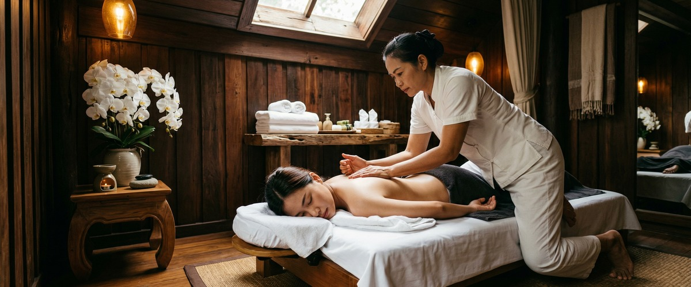

If you're dealing with a sharp, shooting pain that travels from your lower back through the buttock and down the leg, you already know how disruptive sciatica can be.

Simple things like sitting at a desk, getting out of a car, or walking become ordeals. Thai massage and targeted therapeutic massage offer a drug-free way to manage sciatic pain. They reduce the muscle tension that presses on the nerve and restore movement that sciatica steadily takes away.
Sciatica is pain that travels down the leg from the lower back. It is caused by pressure or irritation on the sciatic nerve — the longest and widest nerve in the body. It runs from the lower spine through the buttock and all the way to the foot.
The pain is often described as shooting or burning. It may also come with tingling, numbness, or weakness in the affected leg.
The most common cause is a slipped or herniated disc pressing on a nerve root. But spinal stenosis, spondylolisthesis, and piriformis syndrome can all produce the same result.
NHS guidance on sciatica notes that episodes are often triggered by heavy lifting. Gradual onset with no clear cause is just as common. It can affect anyone, but those aged 30 to 50 are most often impacted.
Tight muscles around the lower spine and piriformis add pressure to the sciatic nerve. When those muscles are released through skilled massage, that pressure drops.
Research published on PubMed found that massage reduced low back pain and improved range of motion in a client with sciatica symptoms. This places it firmly as a meaningful drug-free option.
Sports massage uses firm, targeted pressure and myofascial release to reach deep muscle layers. It works well for piriformis-related sciatica.
Swedish massage uses long, flowing strokes to improve circulation and calm nerve sheath inflammation. It suits clients whose symptoms are more long-term than acute. Both raise endorphin levels, giving natural pain relief that carries on well after the session ends.
Hot stone massage uses heated basalt stones to reach deep into tense muscle without heavy manual pressure. It is a good option for those whose sciatica makes firm pressure too painful in the early stages.
The heat encourages muscle relaxation and better blood flow around the affected nerve root. You can book your first session online and let the team know the location and nature of your symptoms before you arrive.
At Serendipity Massage Therapy & Wellness on Hope Street, every sciatica session starts with a short consultation. Your therapist will ask where the pain begins, how far it travels, and whether certain positions make it worse. This shapes the treatment.
The focus may be the lower back, the piriformis and glutes, or the full length of the leg, depending on what your body needs.
First appointments for sciatica are typically 60 minutes. This allows time to work through the layers of tension that build up when the body braces against pain.
The techniques draw on the methods developed by head therapist Jariya Malone, adapted for nerve-related pain. One session brings real relief. A course of regular treatments builds the lasting muscle balance that stops symptoms coming back. Book a session in Glasgow city centre to get started.
Office workers who sit for eight or more hours a day often have tight hip flexors and a shortened lower back. Runners and cyclists tend to overload the piriformis and glutes. People in physical jobs involving repeated lifting or twisting are also at high risk.
Those in the later stages of pregnancy can experience sciatic pressure from postural shifts. If your sciatica is managed but persistent, regular massage is one of the most practical tools for keeping flare-ups at bay. Arrange your appointment online whenever suits you.
In most cases, no. Skilled massage targets the muscles around the nerve rather than pressing on the inflamed nerve itself. It is safe and helpful.
Tell your therapist exactly where your pain is and how bad it is before the session. This lets them adjust pressure and technique. If sciatica is in a severe, acute phase, your therapist may suggest a gentler approach or hot stone treatment until the intensity settles.
Many clients notice a clear drop in pain and better movement after just one or two sessions. Research suggests that regular treatment over several weeks gives the most lasting results.
The muscle tension driving nerve compression takes time to fully release. A course of four to six sessions, spaced one to two weeks apart, is a good starting point for most people with persistent sciatica.
Sports massage and deep tissue work are most often recommended for piriformis-related and disc-related sciatica. Both reach the deeper muscle layers that contribute to nerve pressure.
Swedish massage is a good choice when symptoms are severe and firm pressure would be too uncomfortable. Hot stone massage offers a useful middle ground, using heat to relax deep muscle tissue gently. Your therapist at Serendipity will assess which approach suits your needs.
Yes, in most cases massage is safe alongside a herniated disc diagnosis. It can help manage the muscle guarding and pain that come with it.
Massage does not treat the disc itself. It does relieve the secondary muscle tension that often makes sciatic symptoms worse. Always tell your therapist about any diagnosis, and check with your GP first if you are unsure whether massage is right for your situation.
Sciatica typically causes pain along the path of the sciatic nerve. This runs from the lower back, through the buttock, down the back of the thigh, and sometimes into the calf or foot.
The leg pain is often stronger than the back pain itself. Many people also feel tingling, numbness, or weakness in the affected leg alongside the classic shooting or burning sensation.
Regular massage is one of the most practical steps for people prone to sciatica. It maintains muscle balance in the lower back, hips, and glutes, and reduces ongoing tension in the piriformis.
This lowers the chance of nerve compression returning. Combining regular massage with postural awareness and stretching gives the best long-term results.